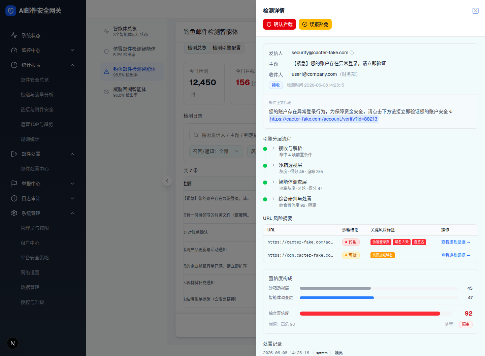
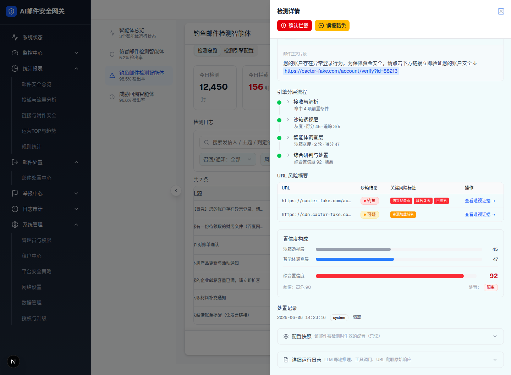

| 所属组件 | 2.5 检测日志主表 |
| 主文件 | index.html |
| 触发路径 | 总览日志表行右「详情」按钮 → setDetailLog(log) 打开右侧 Sheet（!w-[680px]） |
| demo 组件 | phishing-detection-agent-v1.tsx 详情 Sheet + 子组件 EngineSteps / ConfidenceBarRow / CtxRow |
| spec 章节 | §1.2 A5/A6/A7、§2.1 信息架构 |


| # | 元素 | 文案 | 交互行为 | 跳转 |
|---|---|---|---|---|
| 1 | 确认拦截按钮 | 确认拦截（红） | setConfirmBlock(detailLog) | → layer-6 |
| 2 | 误报豁免按钮 | 误报豁免（琥珀） | setExemptDialog(detailLog) | → layer-6 |
| 3 | 邮件上下文 | 发信人（可复制）/主题(tooltip)/收件人(部门)/方向标签/检测时间 | 点发信人/主题复制 | — |
| 4 | 正文片段高亮 URL | bodySnippet + 蓝底 highlightedUrl | 点击 → setEvidenceUrl(urls[0]) | → layer-5 |
| 5 | 引擎分层步骤条 | 接收与解析/沙箱透视层/智能体调查层/综合研判（手风琴） | 点标题展开（activeStep），状态点绿/琥珀(超时)/灰(跳过) | — |
| 6 | URL 风险摘要表 | URL/沙箱结论/关键风险标签/操作 | 「查看透视证据 →」setEvidenceUrl(u) | → layer-5 |
| 7 | 置信度构成 | 沙箱层/智能体层/综合置信度（90 阈值虚线） | hover 综合条 Tooltip 拆解 | — |
| 8 | 豁免提示条 | 豁免规则「X」生效，处置降级 A→B（绿，仅有豁免时） | 展示 | — |
| 9 | 处置记录 | time + operator + action 列表 | 展示 | — |
| 10 | 配置快照（Collapsible） | 默认收起，展开显示 JSON + 「历史快照」提示 + 导出 JSON | 点标题展开，箭头旋转 180° | — |
| 11 | 详细运行日志（Collapsible） | 默认收起，展开显示搜索 + 层级筛选(全部/沙箱/智能体) + 日志行 + 导出 | 点标题展开 | — |
| 比对项 | demo 实际 DOM | 提取的 HTML | 是否一致 |
|---|---|---|---|
| 抽屉根 | div.bg-background（!w-[680px]）childCount=3 nodeCount=179 | 真实提取 DOM（bg-background Sheet，含 lucide 图标/手风琴） | ✅ |
| 顶部处置按钮 | 2（确认拦截 bg-red-600 / 误报豁免 bg-amber-400） | 2 同色 | ✅ |
| 引擎分层步骤 | 4 步（接收解析/沙箱/智能体/综合）手风琴 | 4 步，点击展开一致 | ✅ |
| URL 摘要行 | 2（钓鱼/可疑），操作「查看透视证据 →」 | 2 行一致 | ✅ |
| 置信度 90 阈值线 | absolute border-dashed border-red-500 left:90% | 一致 | ✅ |
| 底部折叠分节 | 2 个 Collapsible，默认 data-state=closed | 2 个默认收起 | ✅ |